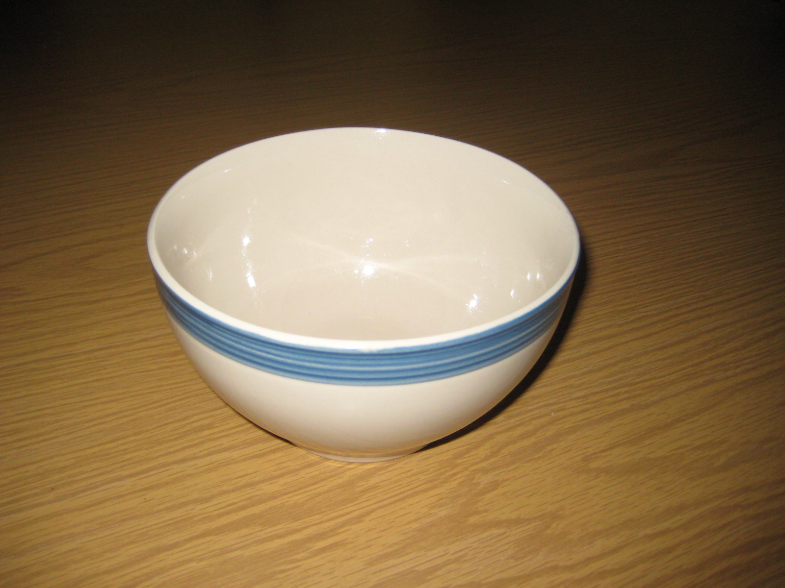
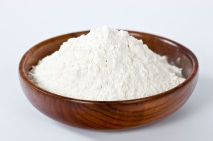
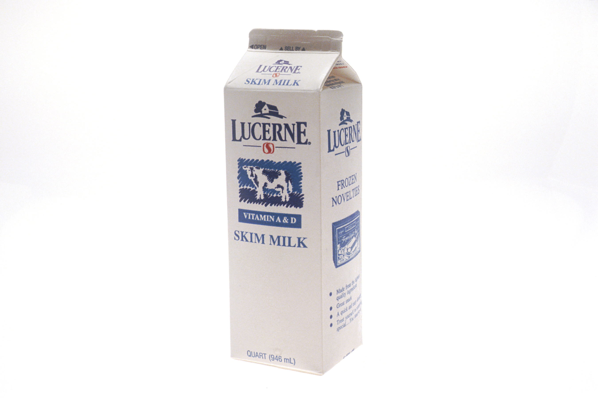
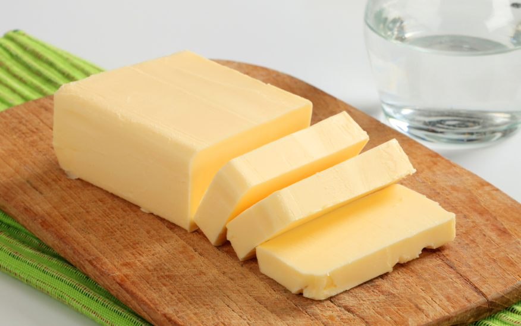
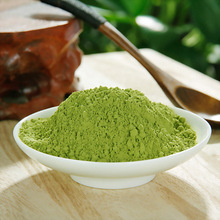

First you need a bowl! If you don't hava a big bowl,get one on
amazon! Or buy one at your favourite grocery store.

Add 3 pound flour.Err, sometime people do find bugs in their flour, want get rid of the bugs?
click me! Or just try to
google it.

Add 3 Liter milk. Remeber to keep your milk in the fridge, or it will go bad quickly.

Of course you need some butter.

If you want your cake taste different, add some spices. This is my farvorite mocha spice, I get it on
amazon.
